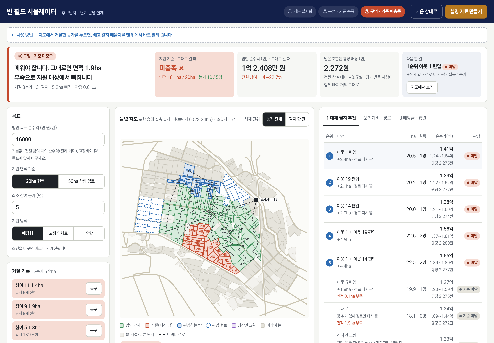
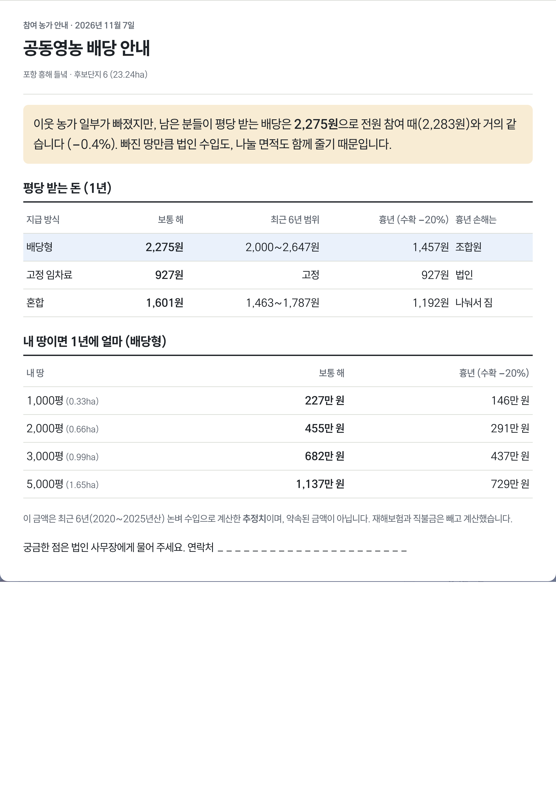
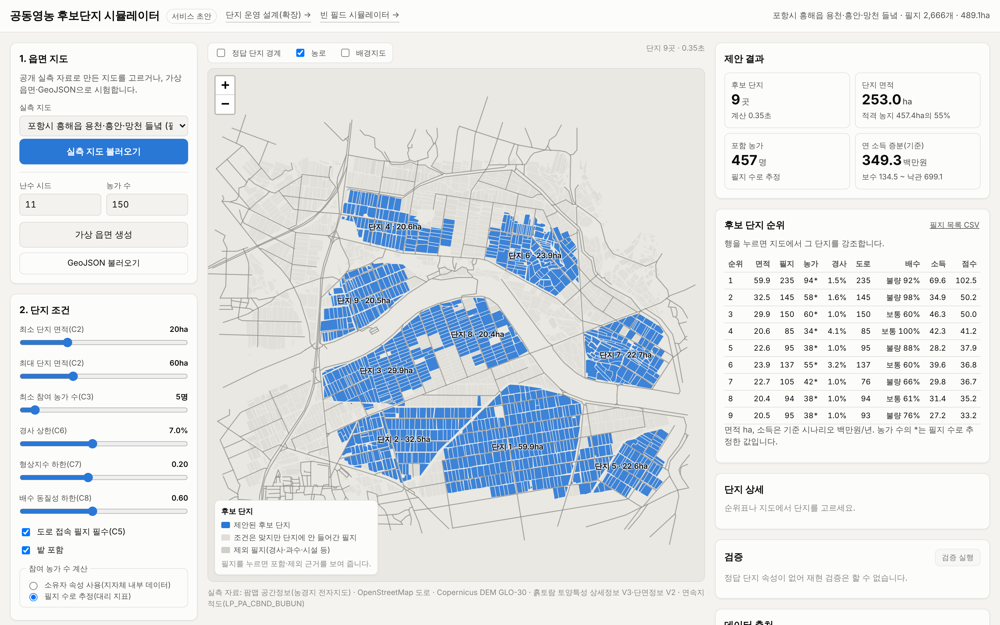
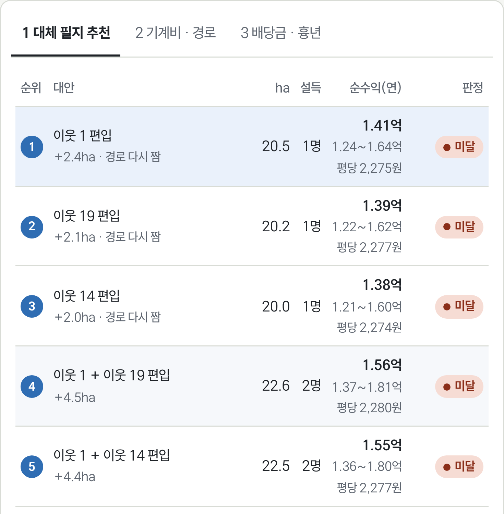
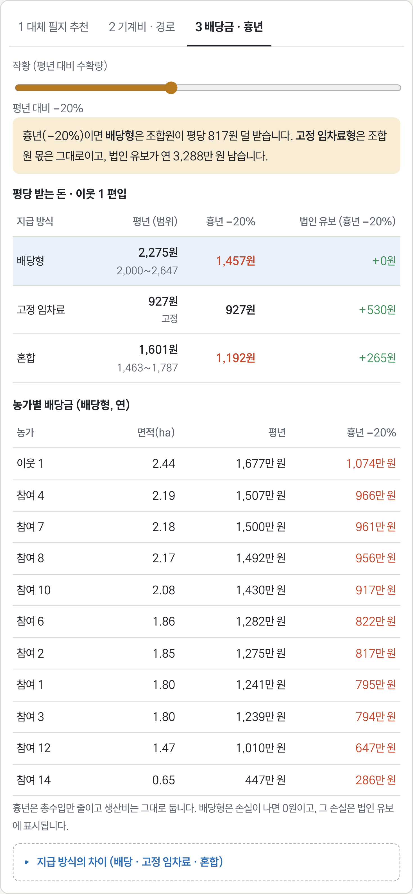
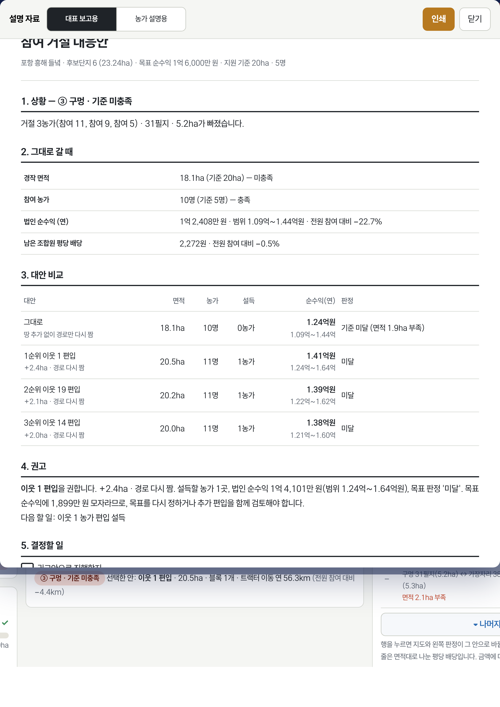

농가 한 곳이 빠져도, 공동영농은 계속됩니다
모두의 농장은 공동영농 법인이 농가 거절로 생긴 빈 땅을 지도 위에서 바로 다시 설계하도록 돕는 웹 서비스입니다. 지원 기준 충족 여부, 법인 순수익, 남은 조합원의 평당 배당, 대신 설득할 1순위 땅을 거절 당일 보여 주고, 대표 보고용과 농가 설명용 자료 한 장을 인쇄합니다.


농가 인구의 절반이 65세를 넘고, 정부는 2030년까지 공동영농 법인 100개소를 키운다. 선정되면 2년 최대 20억 원을 받지만, 단지는 20ha·농가 5명을 한 덩어리로 채워야 한다.
출처: 경상북도(지구 수), 농식품부 공동영농 확산 지원사업 2027 예산안(선정 법인). 농가 인구 65세 이상 51.0%: 국가데이터처 2025 농림어업총조사
20ha·5명 요건을 못 지키면 지원에서 탈락한다. 재설계에 2주 이상 걸리고 설명회를 다시 연다.
지번도와 현장 답사로 후보 1곳을 확인하는 데 하루 이상 쓴다. 탈락 사유 1위가 '집단화 미비·면적 부족'이다.
지구별 평당 1,500~4,000원이라는 배당의 산정 근거가 없어 남은 농가가 다시 망설인다. 흉년 때 누가 손해를 지는지도 모른다.
"자료는 저희가 모으지 않습니다. 법인이 컨설팅 업체를 통하거나 자체 회의로 만들어 제출하죠. 탈락은 집단화가 안 됐거나 면적이 부족한 경우가 많습니다. 필지 묶음 화면을 쓴다면 주체는 시가 아니라 법인일 겁니다."
"이미 선정된 법인은 도면이 지도에 다 만들어져 있고, 거절 단지가 생겨도 인근지로 넓히면 된다는 걸 압니다. 지금 필요한 쪽은 사업을 신청하려는, 예를 들어 2028년을 준비하는 법인입니다."
농가 설득을 위해 설명회를 10회 이상 열었다. 첫 배당 전까지 농가는 배당 약속을 믿지 않았고, 지구별 평당 배당 단가는 산정 근거가 공개된 적이 없다.
시군은 검토·현장 대조만 한다. 서류를 만드는 쪽은 법인이다
탈락 사유 1위. 거절이 나오면 기준 판정부터 다시 해야 한다
선정 법인은 이미 안다. 신청을 준비하는 법인이 1순위 고객
빈 땅을 빼고 20ha·5명을 판정, 편입 후보를 순위로
지급 방식별 평당 배당 범위와 흉년 손실 부담
대표 보고용 1장, 농가용 큰 글자 1장
학습할 실제 설계 사례가 없어 머신러닝 대신 제약 탐색을 쓴다. 소유자는 비공개라 필지 수로 농가 수를 추정하고, 실제 적용 때는 법인 조합원 명부로 바꾼다.

읍면 전체에서 면적·농가 수·도로·경사·배수 조건을 만족하는 단지 후보를 제안
지도에서 거절한 농가를 누르면 빈 땅이 표시되고 맨 위에 판정이 뜬다

면적·설득할 농가 수·순수익 범위로 순위를 매긴 편입 후보

배당형·고정 임차료·혼합별 평당 배당과 흉년(−20%) 때 손실 부담

대표 보고용 1장과 농가 설명용 큰 글자 1장
시제품 바로 열기QR을 찍으면 빈 필드 시뮬레이터가
브라우저에서 바로 실행된다
팀 물개한동대학교 · 박서연(AI융합학부) · 지예은(기계제어공학부)
다음 단계 2026.12 예비 법인 인터뷰 5건 · 2027.3 경북 예비 법인 3곳 무료 설계 · 2027 하반기 보조금 교육·컨설팅 비목으로 첫 유료 계약
화면 수치는 포항 흥해 실측 필지(소유자는 추정)로 계산한 추정치이며 약속된 금액이 아니다. 지원 요건은 농식품부 공동영농 확산 지원사업 기준.